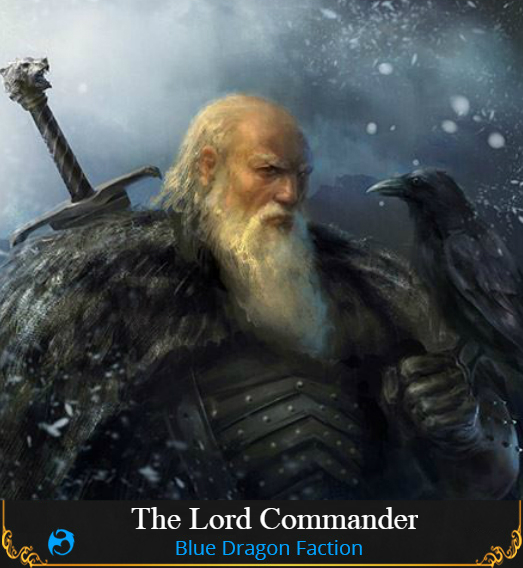

The Lord Commander (Blue Dragon Special)
Passive: Loyal Until Death - You keep an Elite Blue Dragon Banner at your door, so if a Mastermind or Cult Leader attempts to convert you, they will be prevented from visiting you.
Passive: Sworn Vows - Due to an Oath you made upon becoming a Lord Commander, you are unable to step up to become King.
Day Ability [Support]: Lock-down - You will extend the current day phase into the night by 30 seconds, the night phase will be shortened by 30 seconds. - 2 uses.
Day Ability [Investigative]: Honour and Prestige - Target a player. You will be informed if they have Royal Blood. - 3 uses.
Night Ability: Sworn to Protect [Support] - Target a player. You will prevent any visits to them. - 2 uses.
Night Ability: Distinction [Investigative] - Target a player. You will be told if they are Convertible or Non-Convertible. You will also be told if they were just converted. - Infinite uses.
Additional notes:
- Guaranteed to spawn and class is Unique.
- Special because it can investigate and support Blue Dragon.
- Distinction determines already converted players to be Non-Convertible.
- Sworn to Protect will notify the same as Merc protection.
- I know there are similarities to others classes, for example, Maid and Merc, I think this Class could benefit from those.
- This Class will give Blue Dragon it’s power class back since Sheriff and Paladin can now be converted while still being balanced in the way that it isn’t giving BD any definitive “this is Unseen” or “this is Cult”
Image credits: GoT: SoIaF

Lore:
“In all my years of service to the crown, I never once broke my oath. I serve the Dragon until I die.”
The Lord Commander was a renowned veteran Knight. After many years of loyally serving the Blue Dragon, he took up an oath and swore fealty to his kingdom. It was clear to some that the Lord Commander was more than just an ordinary knight, he was something quite unique.
While being a veteran in combat, he was too frail to raise a sword. Instead, he used his skills in identifying the weak minded and the royals he abode with. He also used his veteran skills to protect others from visits.
 I like the concept of the class though
I like the concept of the class though 
 Boslof
Boslof